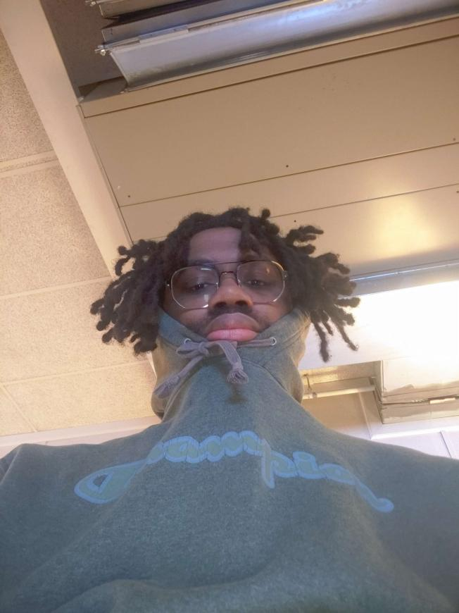

Get ready to experience a disruptive and kinetic real-time multimedia performance, as University students from VCU Arts in Richmond, Virginia present SUM DIMENSION. This hour and a half performance, created by the collective minds of Professor HOLLOWAY's Glitch-As-Method class, will have you recalculating your expectations of art making. Using the frameworks of glitch and feminist theory, this round-robin performance explores the function of distortion and chaos, all while showcasing a decayed and modified plethora of electronics. Don't miss your chance to witness this abstract and thought-provoking display of artistic expression; peeling back the layers you get, like, a Slinky and then it's elongated so the surface area is more cus you've extended it but they don't really know what you do with after that. Come find out.
Featured Glitch Gremlins

Cassie Melson
Cassie is a genderfluid artist with a love for the macabre. They work in many mediums, from animations to clay sculpture.

Kennedy Patterson
Kennedy Patterson is a non-binary multimedia artist with a specialization in interactive media. They are a nerd of many disciplines and enjoy a good story above all else.
Marie Anderson
Marie Anderson an experimental animator, illustrator, and sound artist who portrays fantasies and variations of disruption, monstrosity, and memory. In their practice, they wield the obtuse, electronic intensity of horror aesthetics coupled with a quiet romance with the mundane to approach themes of gender, the body as landscape, and introspective apocalyptic doom.
Elliot Kim
Elliot Kim is a nonbinary video artist with a passion for raw, vulnerable and subversive abstract narratives. They utilize carefully crafted scripts and bold visuals to tell their truths on trauma, identity, and truth.Bijan Hosseini
Bijan Hosseini is a multimedia artist, music producer, and Dj based in the DMV area. He continues to carve his own lane as a producer, raising the bar with his masterful songwriting, sound design and engineering.
Alyssa Scinta
Alyssa Scinta (she/they) is a multimedia artist from the east coast, with a passion for a good pink/blue contrast and a fisheye lens. They specialize in video arts, graphic art, projection, and new media in relation to music and abstraction, live viewings and single channel.
David Mallory
David Mallory (he/him) is a multimedia artist, sound designer, music producer, animator from Virginia. His strive for creating new experiences and sounds captured in music/film is unparalleled.Aniza Douangdara
Aniza Douangdara (she/they) is an animator and sound artist who‘s interested in the exploration and experimentation of distorted perceptions. Their focus is on societal and personal expectations of the mind, body, and soul through an abstract lens of what reality is.